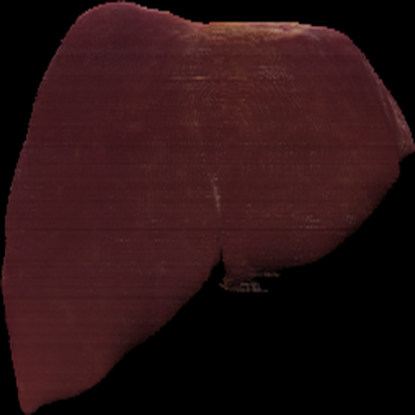
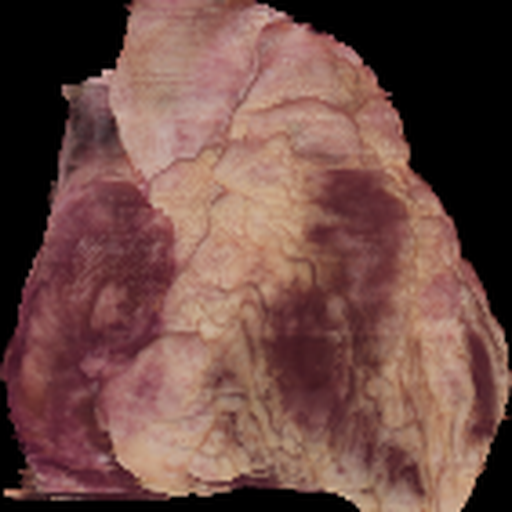
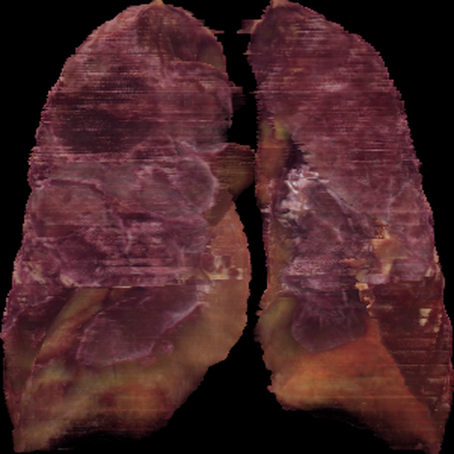
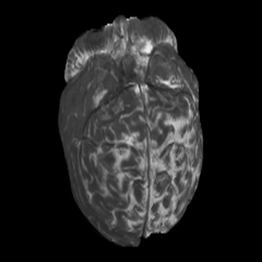
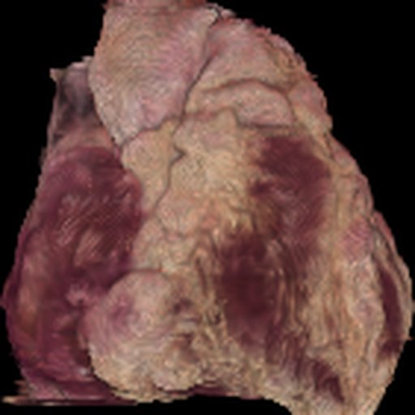
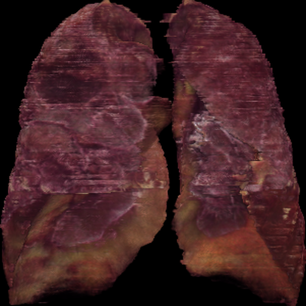
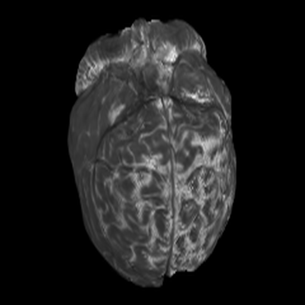

Rendered views various datasets
Visual results of rendered views of different organs from Cryosection, BraTS MRI, and Mouse neonatal MRI datasets.
| GT |  |
 |
 |
 |
_256.png) |
|
| Pred. |  |
 |
 |
_256.png) |
||
| Brain Cryo |
Liver Cryo |
Heart Cryo |
Lungs Cryo |
BraTS MRI |
Mouse MRI |
|---|
| Dataset | PSNR | SSIM | MS-SSIM | FPS | Compression ratio |
|---|---|---|---|---|---|
| Brain (Cryo) | 32.10 | 0.943 | 0.991 | 45.5 | 9.34:1 |
| Liver (Cryo) | 43.16 | 0.981 | 0.996 | 50.18 | 9.45:1 |
| Heart (Cryo) | 32.19 | 0.958 | 0.990 | 48.57 | 10.09:1 |
| Lungs (Cryo) | 34.93 | 0.952 | 0.989 | 39.77 | 4.73:1 |
| BraTS (MRI) | 40.88 | 0.988 | 0.998 | 44.82 | 11.31:1 |
| Mouse Neonatal (MRI) | 33.48 | 0.956 | 0.987 | 46.56 | 9.94:1 |